Campaign and Allowlist Creation
I'm working as a Product Designer on several features for this SaaS based application called Proactive Insights, here at HP. This feature holds significance for me due to numerous challenges and a great learning curve while collaborating with stakeholders such as Product Managers, a UX Researcher, a UX writer, and a visual designer.
The primary focus of this feature is to enable IT administrators to measure employee satisfaction of their devices, enhancing their overall productivity. This includes sending out action-based campaigns containing survey URLs to employees' devices. Additionally, a key aspect of the feature was to enable primary IT admins to create an Allowlist comprising all accepted URLs for the campaigns. This Allowlist could also be accessed (though not modified) by secondary users within their respective departments.
Challenges and Goals
- Validating the feature requirements with users
- Validating my assumptions with user’s feedback
- Validating my wireframes with the visual designer, UX writer, product manager and developers
- Measure outcome
Research
To get more clarity on this and to validate the requirement and personas, with the help of a UX researcher, based on their role, I created proto-personas and understood their pain points.
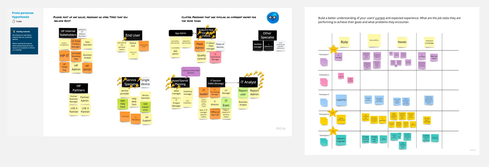
1. Figuring out the user personas
As we interviewed a few users, we figured out that there were 2 types of personas - Primary IT admin and Secondary IT admin, each having their specific roles but similar pain points.
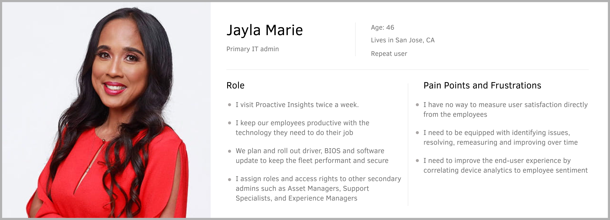
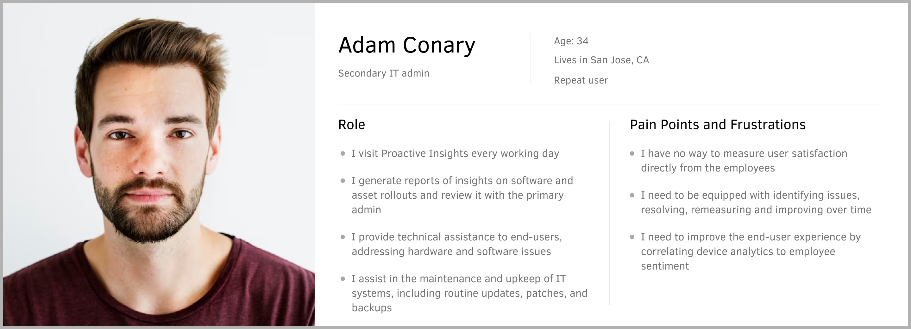
2. Filter criteria on campaigns
The users would like to to send campaigns to specific segments within a fleet. This could be based on device model, manufacturer, location, operating system, and more.
3. Limited permissions to secondary IT admins
The primary IT admins should have the ability to add campaign URLs to the allowlist while the secondary IT admins should be granted access to view the campaign URLs established by the primary IT admins. However, they should not be allowed to modify, add, or remove these URLs.
Assumptions
Prior to commencing the user flows, I needed to establish several assumptions in my initial iteration that I aimed to validate with the users at a later stage.
Before starting the user flow I had to make a few assumptions in my initial iteration which I wanted to validate with the users later:
1. A campaign dashboard
My first assumption was that a dashboard showing insights such as total campaigns, target users, average satisfaction rate, respondents would help users get an overview of their fleet device experience satisfaction which can be further drilled down to identify the specific details.
2. Create a campaign page
Next, I designed a "Create a New Campaign" page, allowing users to input all essential campaign details, including the campaign name, category, duration, filter criteria, target audience, and targeted URL.
3. URL Allowlist on Settings page
My third assumption was that the most appropriate place to manage the URL Allowlist was in Company Settings > Preferences tab.
4. 'Edit URL' link in the 'Create a campaign' page
My last assumption was that the users might need to manage the URL Allowlist while creating and selecting a URL for a campaign.
User flows
Keeping the assumptions in mind, I created a user flow and validated it with the Product Managers.
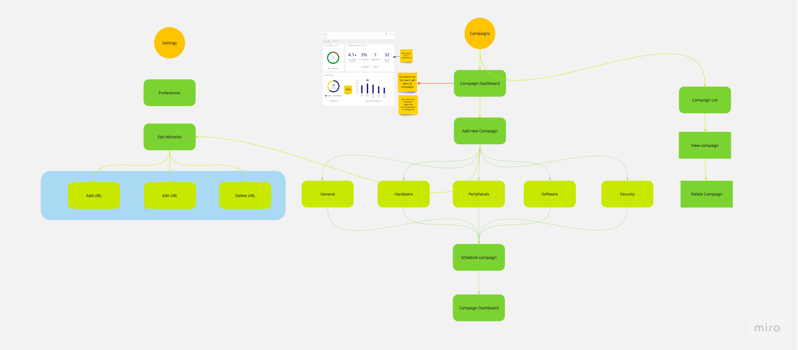
Wireframes
Next step was the creation of wireframes and validating it with all the stakeholders. There were several round of iterations that I had to work on to get the wireframes right.
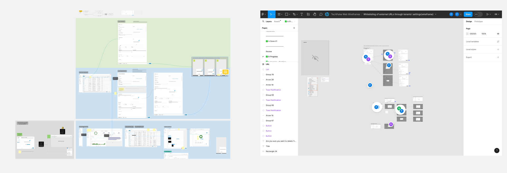
Dashboard journey
There were several iterations of the dashboard till I got an approval from stakeholders.
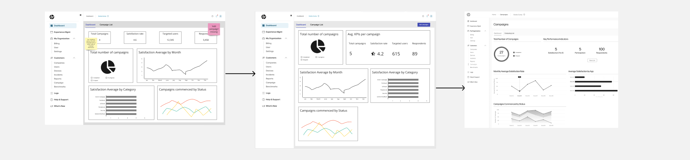
Iteration 1
Manage allowlist using 'Create a campaign' page
Manage allowlist using Settings page
Feedback on Iteration 1
I reviewed my screens with the stakeholders and they had the following feedback on the above screens:
Visual Designer:
- The visual designer’s suggestion, in the campaign creation form, was to show an icon for ‘Preview’ instead of a button that clashes with the ‘Schedule’ CTA since the “Preview’ function doesn’t hold the same importance as the primary CTA ‘Schedule’.
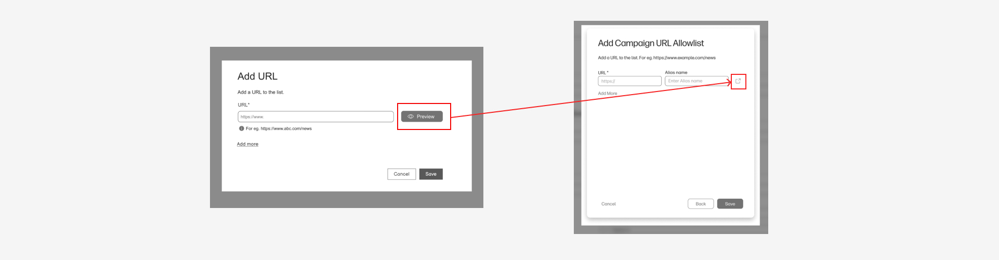
- The visual designer suggested to split the input fields here into two columns so that the form looks balanced.
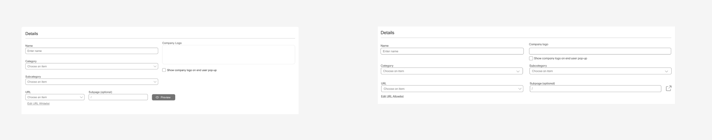
Development team:
- The user should have the same interaction to manage the URL allowlist from the Settings page and the 'Create a Campaigns page' because it's easier to maintain from the dev side if there are any changes in the future.
- I had a major concern if the dev was able to fix 'https://' in the 'URL' field because it's not included in the design library. I wanted to do that because according to the requirement we wanted to restrict the users from including the URLs that are not secured. The dev clarified that they're able to customize the field component coded from the design library
- Edge case - I wanted to hide the ‘Edit URL’ link for secondary users but the development team said this could be a performance issue when loading the 'Create a new campaign' page because every time they load this page they would have to do a check which would lead to more page load time.
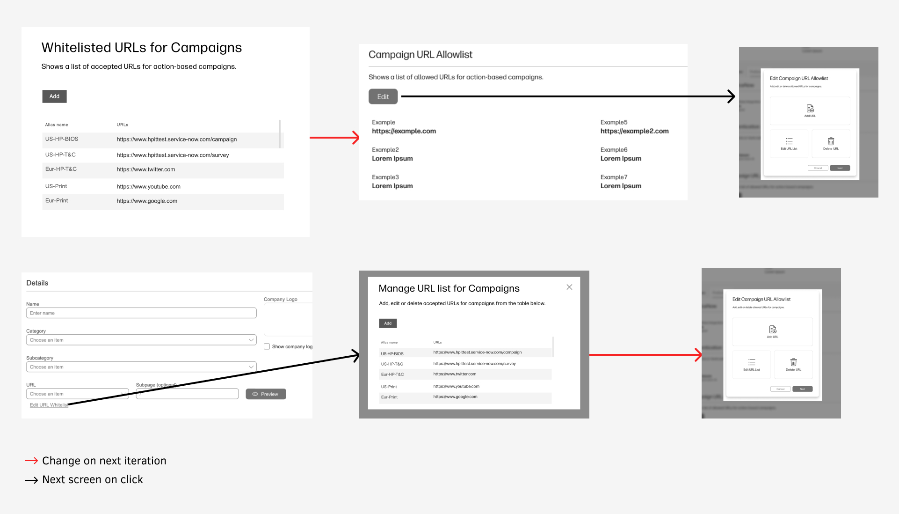
UX writer:
Initially, I had named the table title as Whitelisting of the URLs. The UX writer's suggestion was to change it to Allowlist followed by a few other minor changes in the copy. She also suggested to change the CTA from ‘Add’ to ‘Add Campaign’
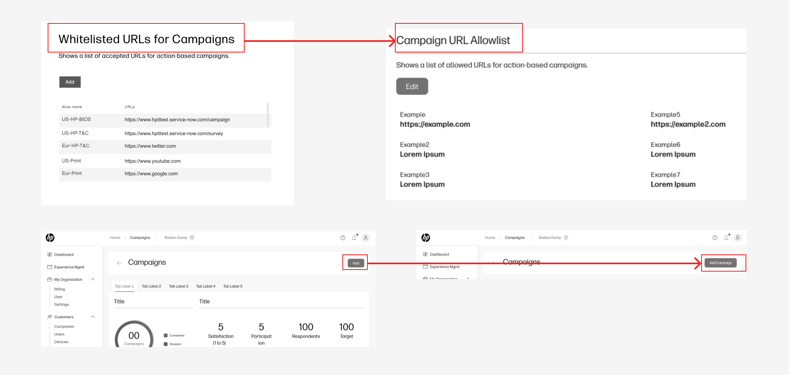
Customers:
They needed an Alias name for each URL because it was difficult to comprehend by just looking at it.
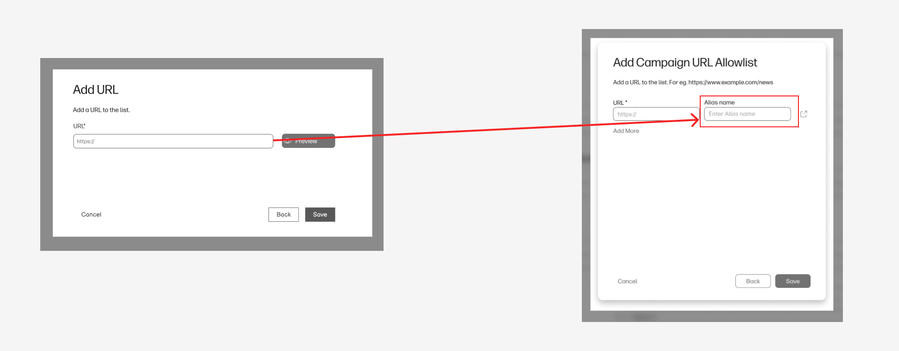
Iteration 2
Manage allowlist using 'Create a campaign' page
Manage allowlist using Settings page
Final Output
Manage allowlist using 'Create a campaign' page
Manage allowlist using Settings page
Measure Outcome
The applications proved immensely beneficial according to IT administrators. The presentation at the Amplify conference garnered overwhelmingly positive feedback. Now, they can directly engage with customers, soliciting feedback and addressing concerns to enhance user experience and productivity. There were more features requested by the customers like adding ‘Schedule Later’ option along with ‘Schedule Now’ but the product manager finalized the scope of this feature and move on with hi-fidelity mockups. Since introducing this feature:
- On average, IT administrators within organizations initiate 17 campaigns monthly tailored to employees' profiles
- Employees exhibit an average response rate of 81%, surpassing expectations by 8%
- Within four months of feature release, contracts were secured with major enterprises including – L'Oréal, Amazon. This feature, alongside others in the latest upgrade, played a pivotal role in clinching these deals